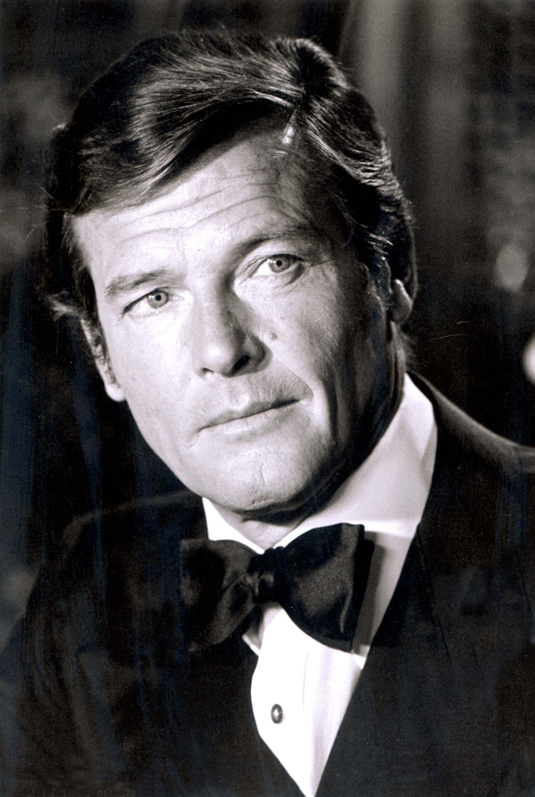
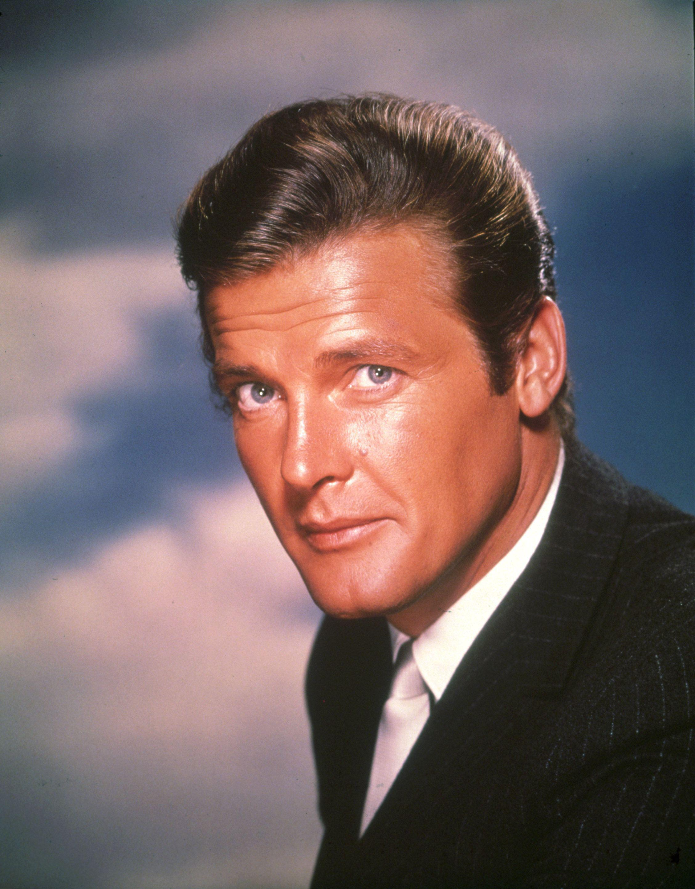

Количество фильмов о Бонде: 7 («Живи и дай умереть», «Человек с золотым
пистолетом», «Шпион, который меня любил», «Лунный гонщик», «Только для
твоих глаз», «Осьминожка», «Вид на убийство»)
До Бонда: Служба в армии, учеба в Королевской академии драматического
искусства, модельный бизнес, маленькие роли в громких голливудских проектах
(«Последний раз, когда я видел Париж» с Элизабет Трейлер, например) и,
конечно, сериал «Святой» – похождения харизматичного и остроумного
авантюриста, «Робин Гуда ХХ века».